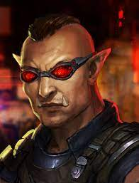
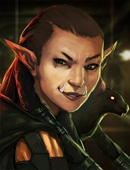
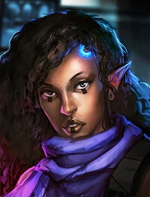
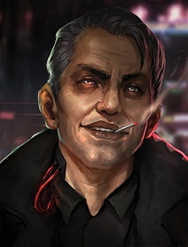
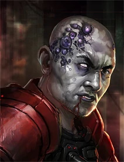

Main Crew
Duncan
Duncan is your high-strung stepbrother and former police officer. He is the resident muscle of the group.
Gobbet
Gobbet is the layed back shaman of Rat.
Is0bel
Is0bel is the introverted decker of the group.
Racter
Racter is an engimatic man, to say more would spoil the fun. He pilots a drone in combat.
Gaichu
Gaichu is a former Red Samurai, a special forces groupd of one of the megacorporations. He is the melee specialist of the crew.